Method in brief
- Samples: accessions classified from the flowering-date sheet: photosensitive (PS, ΔDTF>35 d, n=150) or non-photosensitive (NPS, ΔDTF<34 d, n=73); 34–35 d and missing ΔDTF excluded; one accession with conflicting rows dropped. Accession names/IDs are not shown.
- Hd1 call: NP if any non-reference allele at the three Hd1 deletion/indel sites (chr6:9338004, 9338005, 9338220), otherwise P.
- Haplotype per gene: string of homozygous genotypes at sites within the gene ±2 kb that pass missing≤10%, heterozygosity≤5%, MAF≥0.05; samples heterozygous or missing at a used site are left out for that gene; haplotypes with n≥5 are shown (H1 = most frequent). Genotypes are unphased.
- Tests (per gene): logistic (PS ~ PC1–5 + Hd1 + haplotype) and OLS (ΔDTF ~ PC1–5 + Hd1 + haplotype), likelihood-ratio / F-test for the haplotype term; Benjamini–Hochberg FDR across the 28 genes. "sep." marks genes with a very large coefficient (a small haplotype almost entirely one group), where the logistic test is unreliable.
Summary
Only RFT1 passes FDR<0.05 in both tests. Its all-reference haplotype is enriched in non-photosensitive accessions, also within Hd1 = P (5 of 14 NPS vs 4 of 127 for the main haplotype). Matching on ancestry was poor, so this stays a lead, not a conclusion. LHD3 and OsLF pass the logistic test but show separation and are not supported by the ΔDTF test. In the earlier analysis restricted to photosensitive Hd1 = P accessions (n=144), no gene passed FDR.
| Gene | RAP-DB | Zone | Sites | n tested | Hap n≥5 | Logistic p | FDR | ΔDTF p | FDR |
|---|---|---|---|---|---|---|---|---|---|
| OsCOL10 | Os03g0711100 | 1 | 75 | 171 | 6 | 0.853 | 0.996 | 0.710 | 0.846 |
| OsFKF1 | Os11g0547000 | 1 | 154 | 73 | 4 | 1.000 sep. | 1.000 | 0.765 | 0.846 |
| OsLHY | Os08g0157600 | 1 | 127 | 104 | 5 | 0.511 | 0.753 | 0.637 | 0.846 |
| OsZHD1 | Os09g0466400 | 1 | 8 | 208 | 4 | 0.220 | 0.362 | 0.516 | 0.846 |
| DTH8 | Os08g0174500 | 2 | 43 | 173 | 6 | 0.012 sep. | 0.062 | 0.750 | 0.846 |
| Ghd7 | Os07g0261200 | 2 | 46 | 191 | 3 | 0.654 | 0.876 | 0.795 | 0.846 |
| Hd2/OsPRR37 | Os07g0695100 | 2 | 69 | 157 | 2 | 0.015 | 0.062 | 0.416 | 0.846 |
| Ehd1 | Os10g0463400 | 3 | 48 | 180 | 5 | 0.018 sep. | 0.062 | 0.116 | 0.650 |
| Ehd2 | Os10g0419200 | 3 | 45 | 134 | 3 | 0.034 sep. | 0.086 | 0.393 | 0.846 |
| FIE2 | Os08g0137100 | 3 | 67 | 78 | 4 | 0.819 | 0.996 | 0.846 | 0.846 |
| OsHAPL1 | Os05g0494100 | 3 | 9 | 211 | 3 | 0.192 | 0.335 | 0.329 | 0.846 |
| SDG711 | Os06g0275500 | 3 | 117 | 162 | 4 | 0.037 sep. | 0.086 | 0.815 | 0.846 |
| SDG718 | Os03g0307800 | 3 | 5 | 221 | 4 | 0.075 | 0.151 | 0.527 | 0.846 |
| Hd3a | Os06g0157700 | 4 | 51 | 165 | 5 | 0.024 sep. | 0.069 | 0.081 | 0.567 |
| RFT1 | Os06g0157500 | 4 | 52 | 199 | 2 | 3.6e-05 | 0.0005 | 0.00013 | 0.0037 |
| LHD3 | Os03g0752100 | 5 | 86 | 175 | 4 | 0.0012 sep. | 0.012 | 0.010 | 0.144 |
| OsATG8a | Os07g0512200 | 5 | 46 | 139 | 4 | 0.905 | 1.000 | 0.672 | 0.846 |
| OsATG8b | Os04g0624000 | 5 | 130 | 49 | 5 | 1.000 sep. | 1.000 | 0.765 | 0.846 |
| OsATG8c | Os08g0191600 | 5 | 55 | 163 | 5 | 0.751 sep. | 0.956 | 0.372 | 0.846 |
| OsATG8e | Os11g0100100 | 5 | 6 | 186 | 3 | 0.015 | 0.062 | 0.345 | 0.846 |
| OsDof12 | Os03g0169600 | 5 | 25 | 204 | 6 | 0.109 | 0.203 | 0.728 | 0.846 |
| OsDof4 | Os01g0277500 | 5 | 54 | 159 | 4 | 0.025 sep. | 0.069 | 0.389 | 0.846 |
| OsLF | Os05g0541400 | 5 | 37 | 159 | 3 | 1.9e-05 sep. | 0.0005 | 0.603 | 0.846 |
| OsMADS14 | Os03g0752800 | 5 | 113 | 145 | 4 | 0.361 | 0.562 | 0.042 | 0.391 |
| OsMADS15 | Os07g0108900 | 5 | 91 | 163 | 3 | 0.016 sep. | 0.062 | 0.265 | 0.846 |
| TAC1 | Os09g0529300 | 5 | 85 | 172 | 5 | 0.983 | 1.000 | 0.822 | 0.846 |
| bZIP71 | Os09g0306400 | 5 | 40 | 170 | 9 | 0.657 | 0.876 | 0.767 | 0.846 |
| osFTL4 | Os09g0513500 | 5 | 31 | 207 | 3 | 0.074 sep. | 0.151 | 0.674 | 0.846 |
Per-gene boxplots
Each point is one accession; red = PS, blue = NPS; dashed line = 34.5 d (group cut-off). Labels above boxes: n and PS/NPS counts. Tables: PS and NPS counts, number with Hd1 NP, median ΔDTF.
OsCOL10 Os03g0711100 · zone 1 · 75 sites
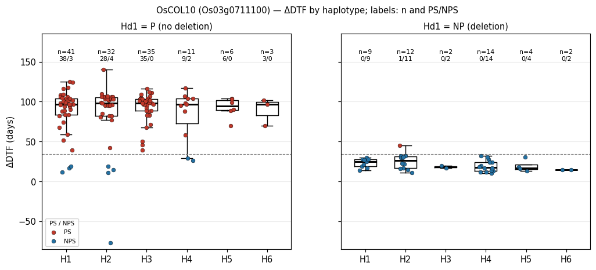
| hap | n | PS | NPS | Hd1 NP | median ΔDTF |
|---|---|---|---|---|---|
| H1 | 50 | 38 | 12 | 9 | 95 |
| H2 | 44 | 29 | 15 | 12 | 90 |
| H3 | 37 | 35 | 2 | 2 | 98 |
| H4 | 25 | 9 | 16 | 14 | 28 |
| H5 | 10 | 6 | 4 | 4 | 80 |
| H6 | 5 | 3 | 2 | 2 | 70 |
OsFKF1 Os11g0547000 · zone 1 · 154 sites
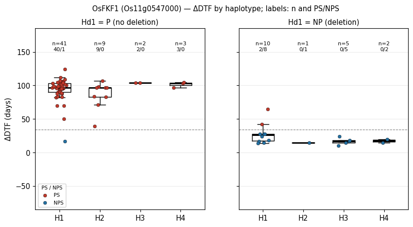
| hap | n | PS | NPS | Hd1 NP | median ΔDTF |
|---|---|---|---|---|---|
| H1 | 51 | 42 | 9 | 10 | 95 |
| H2 | 10 | 9 | 1 | 1 | 90 |
| H3 | 7 | 2 | 5 | 5 | 18 |
| H4 | 5 | 3 | 2 | 2 | 97 |
OsLHY Os08g0157600 · zone 1 · 127 sites
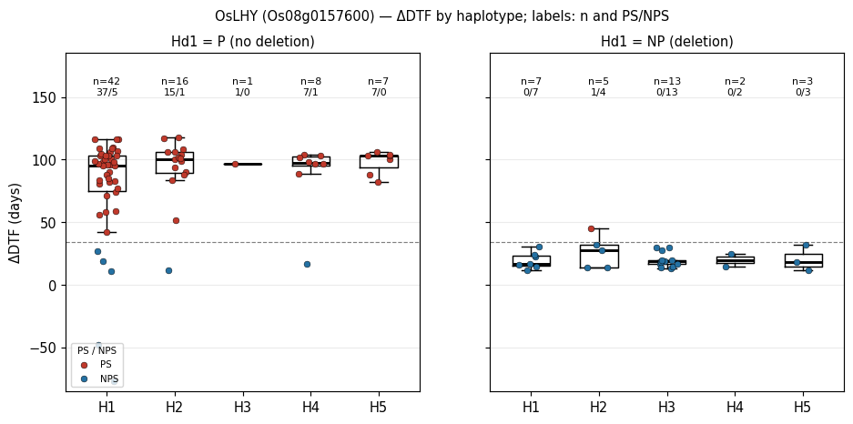
| hap | n | PS | NPS | Hd1 NP | median ΔDTF |
|---|---|---|---|---|---|
| H1 | 49 | 37 | 12 | 7 | 88 |
| H2 | 21 | 16 | 5 | 5 | 94 |
| H3 | 14 | 1 | 13 | 13 | 19 |
| H4 | 10 | 7 | 3 | 2 | 97 |
| H5 | 10 | 7 | 3 | 3 | 94 |
OsZHD1 Os09g0466400 · zone 1 · 8 sites
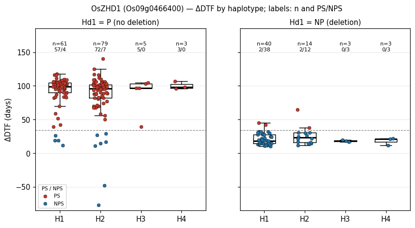
| hap | n | PS | NPS | Hd1 NP | median ΔDTF |
|---|---|---|---|---|---|
| H1 | 101 | 59 | 42 | 40 | 83 |
| H2 | 93 | 74 | 19 | 14 | 94 |
| H3 | 8 | 5 | 3 | 3 | 68 |
| H4 | 6 | 3 | 3 | 3 | 59 |
DTH8 Os08g0174500 · zone 2 · 43 sites
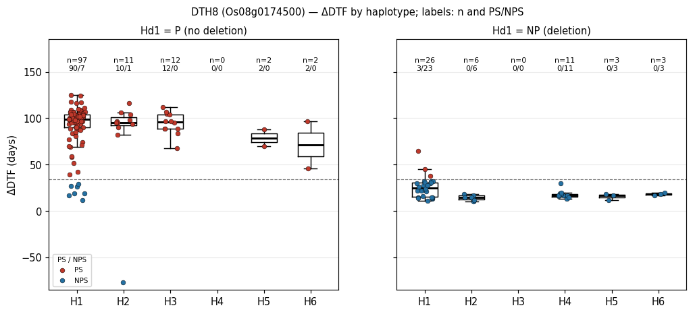
| hap | n | PS | NPS | Hd1 NP | median ΔDTF |
|---|---|---|---|---|---|
| H1 | 123 | 93 | 30 | 26 | 96 |
| H2 | 17 | 10 | 7 | 6 | 90 |
| H3 | 12 | 12 | 0 | 0 | 96 |
| H4 | 11 | 0 | 11 | 11 | 17 |
| H5 | 5 | 2 | 3 | 3 | 18 |
| H6 | 5 | 2 | 3 | 3 | 20 |
Ghd7 Os07g0261200 · zone 2 · 46 sites
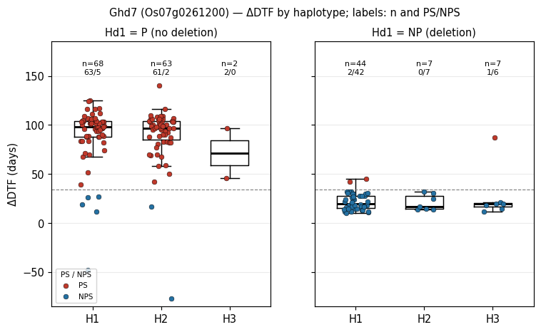
| hap | n | PS | NPS | Hd1 NP | median ΔDTF |
|---|---|---|---|---|---|
| H1 | 112 | 65 | 47 | 44 | 83 |
| H2 | 70 | 61 | 9 | 7 | 97 |
| H3 | 9 | 3 | 6 | 7 | 20 |
Hd2/OsPRR37 Os07g0695100 · zone 2 · 69 sites
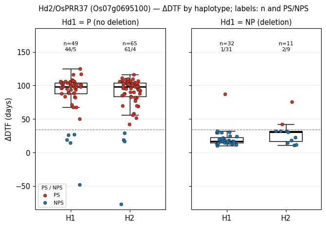
| hap | n | PS | NPS | Hd1 NP | median ΔDTF |
|---|---|---|---|---|---|
| H1 | 81 | 45 | 36 | 32 | 82 |
| H2 | 76 | 63 | 13 | 11 | 95 |
Ehd1 Os10g0463400 · zone 3 · 48 sites
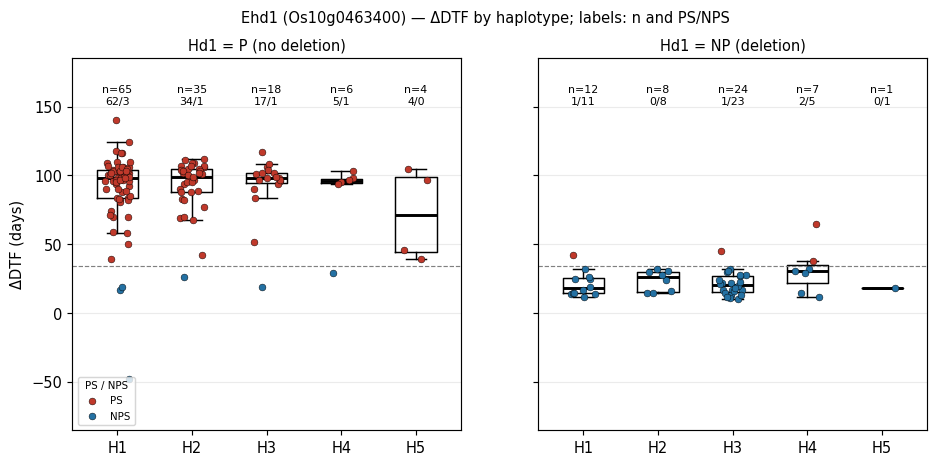
| hap | n | PS | NPS | Hd1 NP | median ΔDTF |
|---|---|---|---|---|---|
| H1 | 77 | 63 | 14 | 12 | 96 |
| H2 | 43 | 34 | 9 | 8 | 95 |
| H3 | 42 | 18 | 24 | 24 | 29 |
| H4 | 13 | 7 | 6 | 7 | 38 |
| H5 | 5 | 4 | 1 | 1 | 46 |
Ehd2 Os10g0419200 · zone 3 · 45 sites
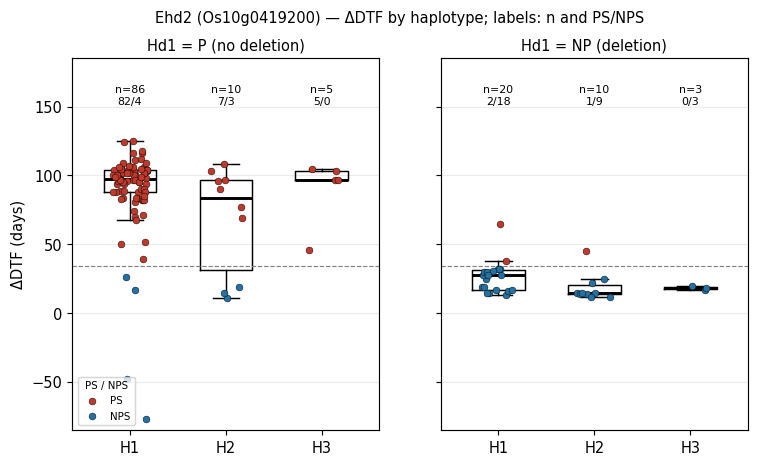
| hap | n | PS | NPS | Hd1 NP | median ΔDTF |
|---|---|---|---|---|---|
| H1 | 106 | 84 | 22 | 20 | 95 |
| H2 | 20 | 8 | 12 | 10 | 20 |
| H3 | 8 | 5 | 3 | 3 | 72 |
FIE2 Os08g0137100 · zone 3 · 67 sites
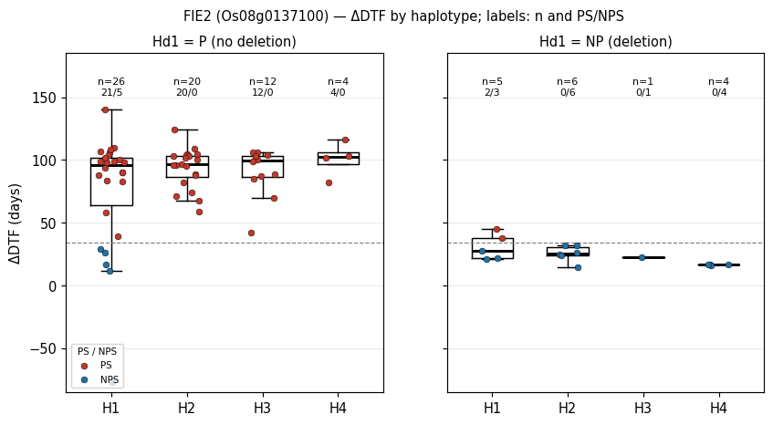
| hap | n | PS | NPS | Hd1 NP | median ΔDTF |
|---|---|---|---|---|---|
| H1 | 31 | 23 | 8 | 5 | 90 |
| H2 | 26 | 20 | 6 | 6 | 92 |
| H3 | 13 | 12 | 1 | 1 | 99 |
| H4 | 8 | 4 | 4 | 4 | 50 |
OsHAPL1 Os05g0494100 · zone 3 · 9 sites
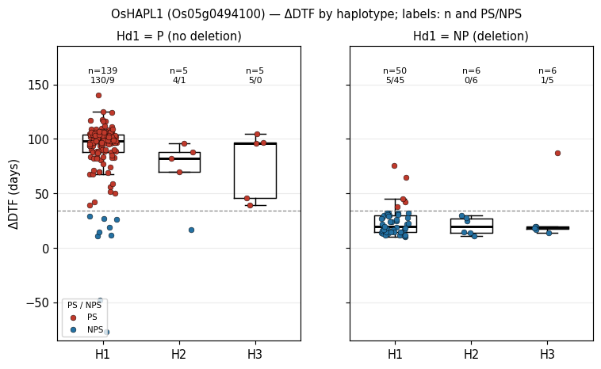
| hap | n | PS | NPS | Hd1 NP | median ΔDTF |
|---|---|---|---|---|---|
| H1 | 189 | 135 | 54 | 50 | 92 |
| H2 | 11 | 4 | 7 | 6 | 28 |
| H3 | 11 | 6 | 5 | 6 | 39 |
SDG711 Os06g0275500 · zone 3 · 117 sites
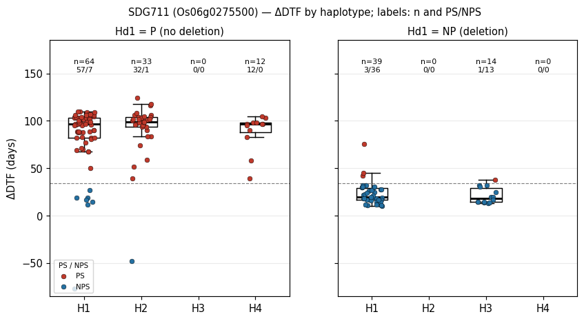
| hap | n | PS | NPS | Hd1 NP | median ΔDTF |
|---|---|---|---|---|---|
| H1 | 103 | 60 | 43 | 39 | 76 |
| H2 | 33 | 32 | 1 | 0 | 99 |
| H3 | 14 | 1 | 13 | 14 | 18 |
| H4 | 12 | 12 | 0 | 0 | 97 |
SDG718 Os03g0307800 · zone 3 · 5 sites
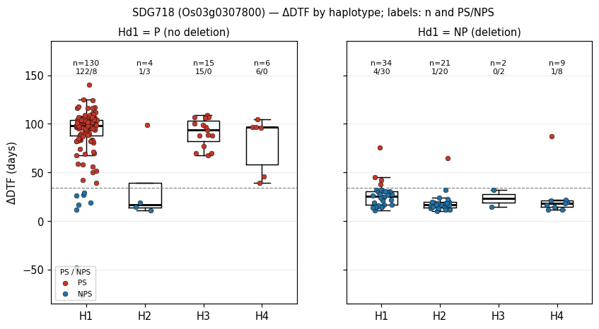
| hap | n | PS | NPS | Hd1 NP | median ΔDTF |
|---|---|---|---|---|---|
| H1 | 164 | 126 | 38 | 34 | 95 |
| H2 | 25 | 2 | 23 | 21 | 17 |
| H3 | 17 | 15 | 2 | 2 | 89 |
| H4 | 15 | 7 | 8 | 9 | 22 |
Hd3a Os06g0157700 · zone 4 · 51 sites
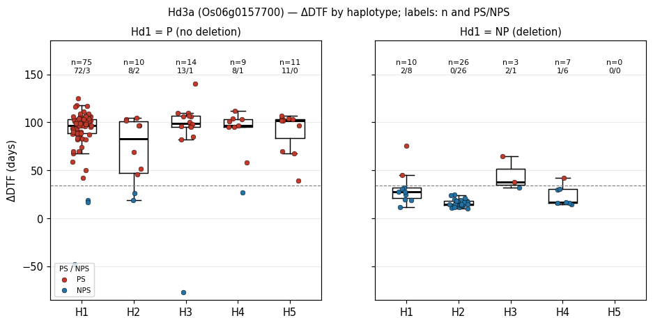
| hap | n | PS | NPS | Hd1 NP | median ΔDTF |
|---|---|---|---|---|---|
| H1 | 85 | 74 | 11 | 10 | 97 |
| H2 | 36 | 8 | 28 | 26 | 18 |
| H3 | 17 | 15 | 2 | 3 | 96 |
| H4 | 16 | 9 | 7 | 7 | 50 |
| H5 | 11 | 11 | 0 | 0 | 102 |
RFT1 Os06g0157500 · zone 4 · 52 sites
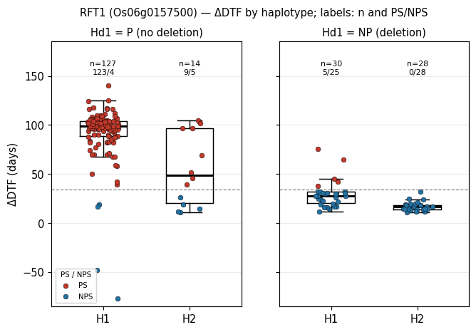
| hap | n | PS | NPS | Hd1 NP | median ΔDTF |
|---|---|---|---|---|---|
| H1 | 157 | 128 | 29 | 30 | 97 |
| H2 | 42 | 9 | 33 | 28 | 18 |
LHD3 Os03g0752100 · zone 5 · 86 sites
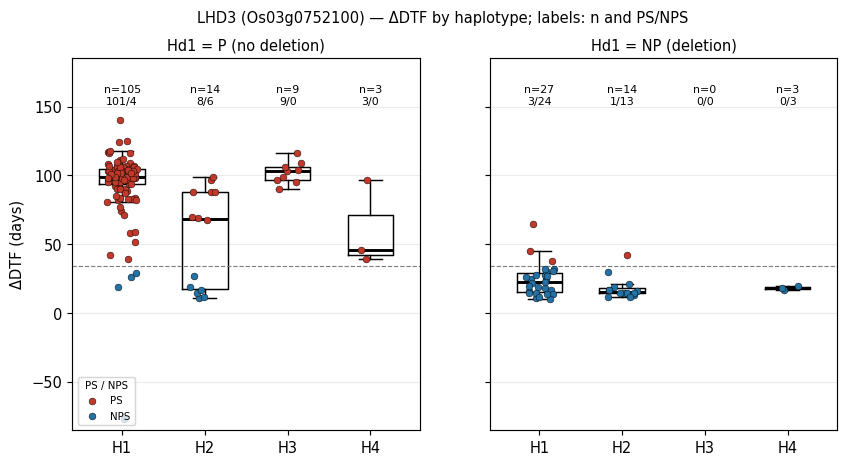
| hap | n | PS | NPS | Hd1 NP | median ΔDTF |
|---|---|---|---|---|---|
| H1 | 132 | 104 | 28 | 27 | 97 |
| H2 | 28 | 9 | 19 | 14 | 18 |
| H3 | 9 | 9 | 0 | 0 | 103 |
| H4 | 6 | 3 | 3 | 3 | 30 |
OsATG8a Os07g0512200 · zone 5 · 46 sites
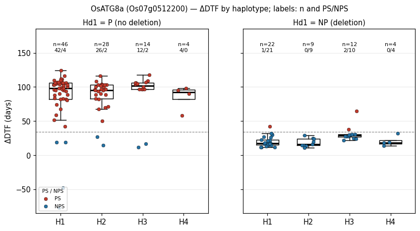
| hap | n | PS | NPS | Hd1 NP | median ΔDTF |
|---|---|---|---|---|---|
| H1 | 68 | 43 | 25 | 22 | 82 |
| H2 | 37 | 26 | 11 | 9 | 89 |
| H3 | 26 | 14 | 12 | 12 | 52 |
| H4 | 8 | 4 | 4 | 4 | 45 |
OsATG8b Os04g0624000 · zone 5 · 130 sites
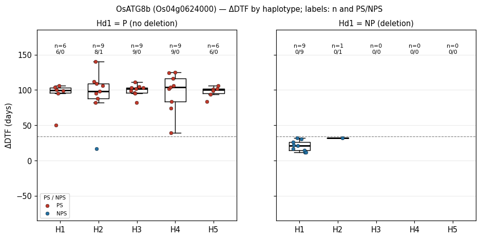
| hap | n | PS | NPS | Hd1 NP | median ΔDTF |
|---|---|---|---|---|---|
| H1 | 15 | 6 | 9 | 9 | 31 |
| H2 | 10 | 8 | 2 | 1 | 96 |
| H3 | 9 | 9 | 0 | 0 | 102 |
| H4 | 9 | 9 | 0 | 0 | 104 |
| H5 | 6 | 6 | 0 | 0 | 100 |
OsATG8c Os08g0191600 · zone 5 · 55 sites
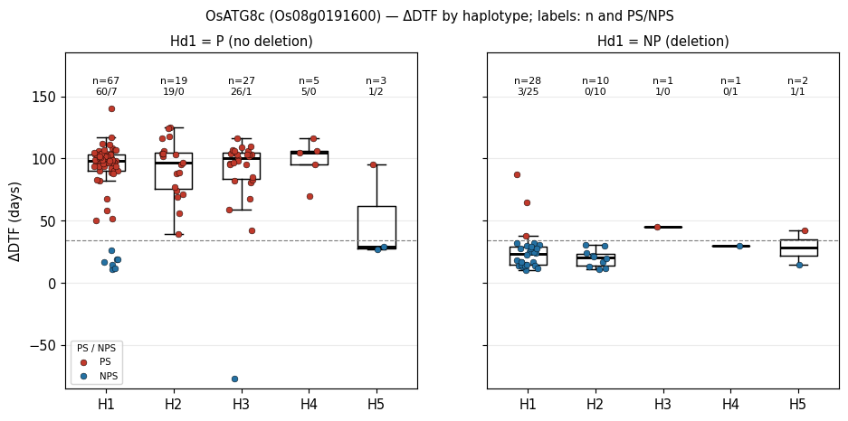
| hap | n | PS | NPS | Hd1 NP | median ΔDTF |
|---|---|---|---|---|---|
| H1 | 95 | 63 | 32 | 28 | 94 |
| H2 | 29 | 19 | 10 | 10 | 74 |
| H3 | 28 | 27 | 1 | 1 | 99 |
| H4 | 6 | 5 | 1 | 1 | 100 |
| H5 | 5 | 2 | 3 | 2 | 29 |
OsATG8e Os11g0100100 · zone 5 · 6 sites
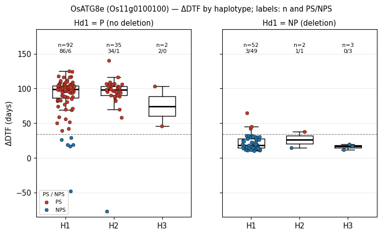
| hap | n | PS | NPS | Hd1 NP | median ΔDTF |
|---|---|---|---|---|---|
| H1 | 144 | 89 | 55 | 52 | 84 |
| H2 | 37 | 35 | 2 | 2 | 97 |
| H3 | 5 | 2 | 3 | 3 | 20 |
OsDof12 Os03g0169600 · zone 5 · 25 sites
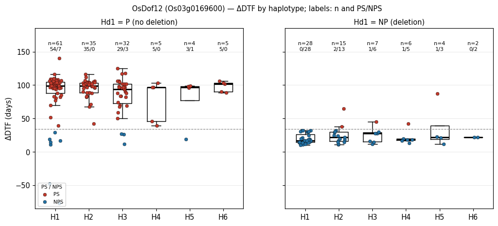
| hap | n | PS | NPS | Hd1 NP | median ΔDTF |
|---|---|---|---|---|---|
| H1 | 89 | 54 | 35 | 28 | 94 |
| H2 | 50 | 37 | 13 | 15 | 90 |
| H3 | 39 | 30 | 9 | 7 | 88 |
| H4 | 11 | 6 | 5 | 6 | 39 |
| H5 | 8 | 4 | 4 | 4 | 55 |
| H6 | 7 | 5 | 2 | 2 | 90 |
OsDof4 Os01g0277500 · zone 5 · 54 sites
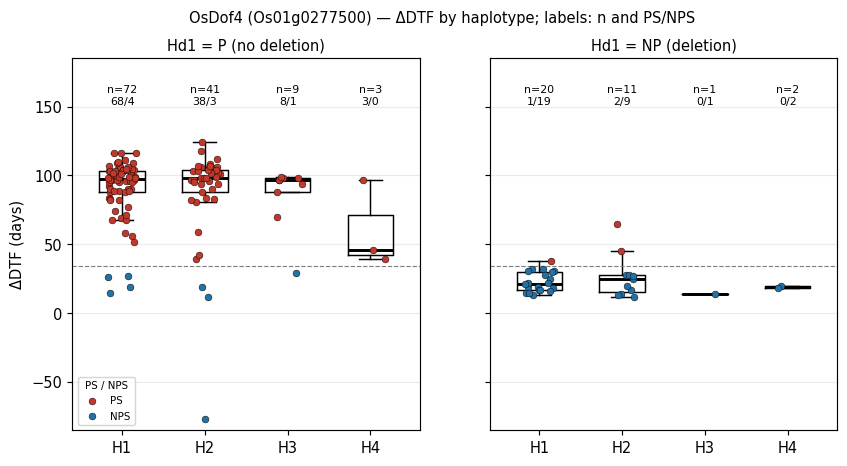
| hap | n | PS | NPS | Hd1 NP | median ΔDTF |
|---|---|---|---|---|---|
| H1 | 92 | 69 | 23 | 20 | 94 |
| H2 | 52 | 40 | 12 | 11 | 96 |
| H3 | 10 | 8 | 2 | 1 | 96 |
| H4 | 5 | 3 | 2 | 2 | 39 |
OsLF Os05g0541400 · zone 5 · 37 sites
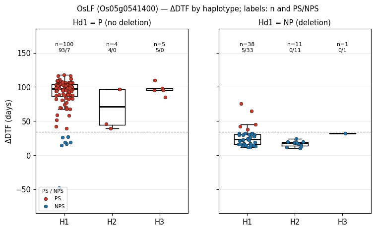
| hap | n | PS | NPS | Hd1 NP | median ΔDTF |
|---|---|---|---|---|---|
| H1 | 138 | 98 | 40 | 38 | 89 |
| H2 | 15 | 4 | 11 | 11 | 18 |
| H3 | 6 | 5 | 1 | 1 | 95 |
OsMADS14 Os03g0752800 · zone 5 · 113 sites
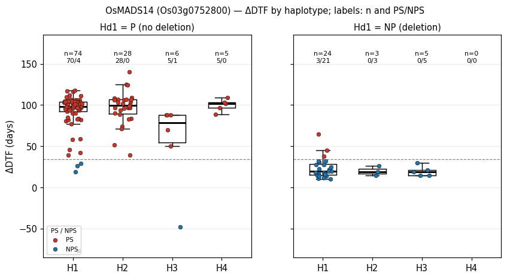
| hap | n | PS | NPS | Hd1 NP | median ΔDTF |
|---|---|---|---|---|---|
| H1 | 98 | 73 | 25 | 24 | 96 |
| H2 | 31 | 28 | 3 | 3 | 97 |
| H3 | 11 | 5 | 6 | 5 | 30 |
| H4 | 5 | 5 | 0 | 0 | 102 |
OsMADS15 Os07g0108900 · zone 5 · 91 sites
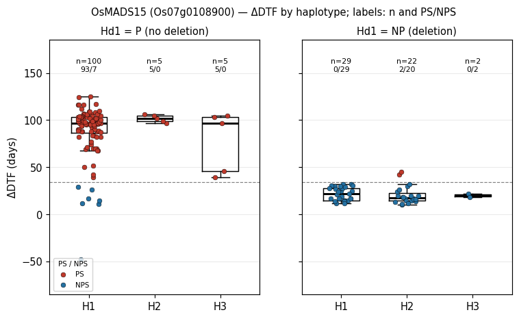
| hap | n | PS | NPS | Hd1 NP | median ΔDTF |
|---|---|---|---|---|---|
| H1 | 129 | 93 | 36 | 29 | 90 |
| H2 | 27 | 7 | 20 | 22 | 20 |
| H3 | 7 | 5 | 2 | 2 | 46 |
TAC1 Os09g0529300 · zone 5 · 85 sites
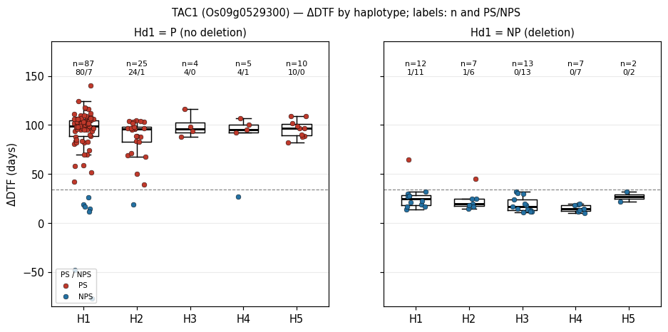
| hap | n | PS | NPS | Hd1 NP | median ΔDTF |
|---|---|---|---|---|---|
| H1 | 99 | 81 | 18 | 12 | 98 |
| H2 | 32 | 25 | 7 | 7 | 88 |
| H3 | 17 | 4 | 13 | 13 | 20 |
| H4 | 12 | 4 | 8 | 7 | 20 |
| H5 | 12 | 10 | 2 | 2 | 94 |
bZIP71 Os09g0306400 · zone 5 · 40 sites
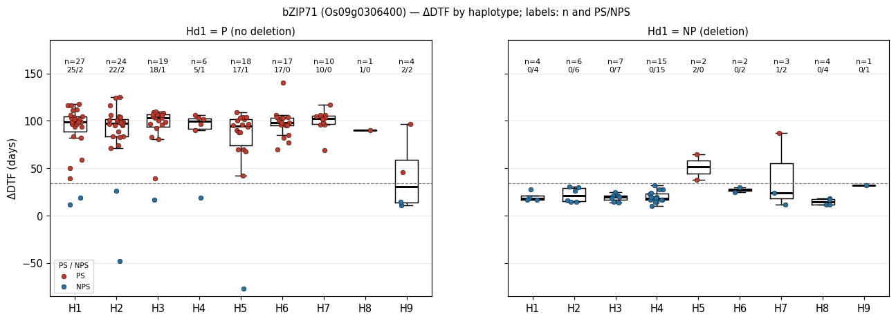
| hap | n | PS | NPS | Hd1 NP | median ΔDTF |
|---|---|---|---|---|---|
| H1 | 31 | 25 | 6 | 4 | 98 |
| H2 | 30 | 22 | 8 | 6 | 95 |
| H3 | 26 | 18 | 8 | 7 | 96 |
| H4 | 21 | 5 | 16 | 15 | 20 |
| H5 | 20 | 19 | 1 | 2 | 92 |
| H6 | 19 | 17 | 2 | 2 | 97 |
| H7 | 13 | 11 | 2 | 3 | 98 |
| H8 | 5 | 1 | 4 | 4 | 17 |
| H9 | 5 | 2 | 3 | 1 | 32 |
osFTL4 Os09g0513500 · zone 5 · 31 sites
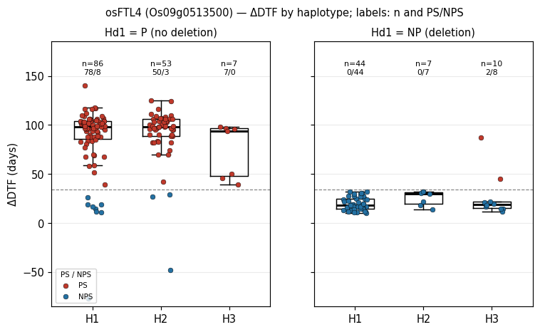
| hap | n | PS | NPS | Hd1 NP | median ΔDTF |
|---|---|---|---|---|---|
| H1 | 130 | 78 | 52 | 44 | 84 |
| H2 | 60 | 50 | 10 | 7 | 97 |
| H3 | 17 | 9 | 8 | 10 | 39 |